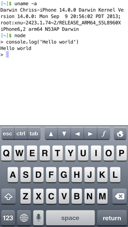

This is a port of JavaScript Node.js, the open source, cross-platform runtime environment for server-side and networking applications written in JavaScript. The screenshot below shows the Node.js REPL executing the proverbial Hello World that all programming languages must introduce themselves with. The screenshot may say only Hello World but behind this are a potential 128 234 JavaScript packages all waiting for roll-out to iPhones and iPads around the world. This is almost as exciting as Java level code reusability. JavaScript is interpreted or JIT compiled with the Google V8 engine. Google V8 is included in our port of Node.js.

A Linux Desktop for iPhone and iPad
See our Facebook page for details
https://www.facebook.com/qmolelinux

Follow us on Twitter for instant updates!
http://www.Twitter.com/@ChrisKohlhepp